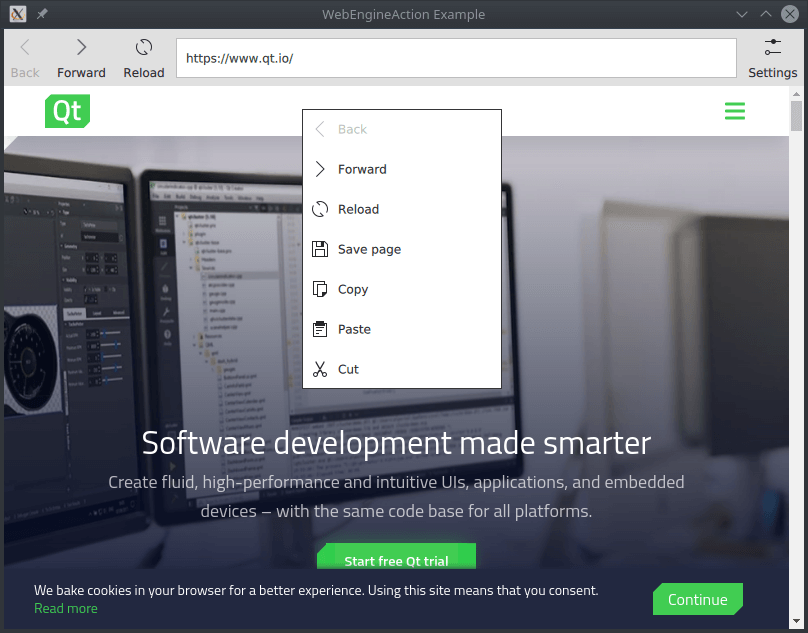

WebEngine Action Example
A simple browser implemented using WebEngineActions.

WebEngine Action Example demonstrates how to perform actions on a web page using the WebEngineAction type. It shows the minimum amount of code needed to bind browser functionalities to input elements and build up a custom context menu.
Running the Example
To run the example from Qt Creator, open the Welcome mode and select the example from Examples. For more information, visit Building and Running an Example.
Working With Web Engine Actions
An intended use of WebEngineAction is building a connection between UI elements and browser commands. It can be added to menus and toolbars via assigning its properties to the corresponding ones of the element.
The ToolButton relies on the properties provided by a WebEngineAction. Clicking the button triggers backwards navigation on the originating WebEngineView of the action.
ToolButton {
property int itemAction: WebEngineView.Back
text: webEngineView.action(itemAction).text
enabled: webEngineView.action(itemAction).enabled
onClicked: webEngineView.action(itemAction).trigger()
icon.name: webEngineView.action(itemAction).iconName
display: AbstractButton.TextUnderIcon
}
The simplest way to create custom context menus is enumerating the required WebEngineAction types in a data model and instantiating MenuItem types for them, for example using a Repeater.
property Menu contextMenu: Menu {
Repeater {
model: [
WebEngineView.Back,
WebEngineView.Forward,
WebEngineView.Reload,
WebEngineView.SavePage,
WebEngineView.Copy,
WebEngineView.Paste,
WebEngineView.Cut
]
MenuItem {
text: webEngineView.action(modelData).text
enabled: webEngineView.action(modelData).enabled
onClicked: webEngineView.action(modelData).trigger()
icon.name: webEngineView.action(modelData).iconName
display: MenuItem.TextBesideIcon
}
}
}
Assigning a WebEngineAction to multiple UI elements will keep them in sync. As it can be seen in the picture above, if the browser engine disables a navigation action, both corresponding menu items will be disabled.